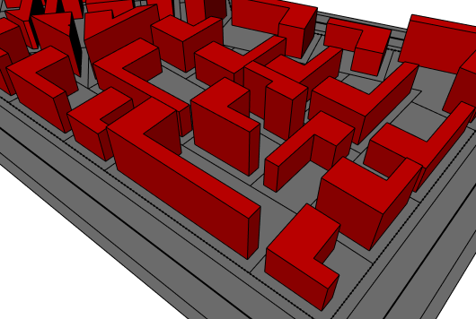
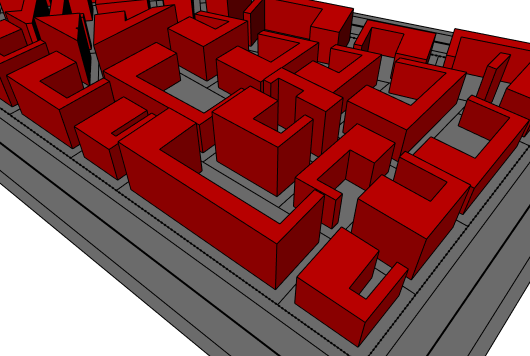
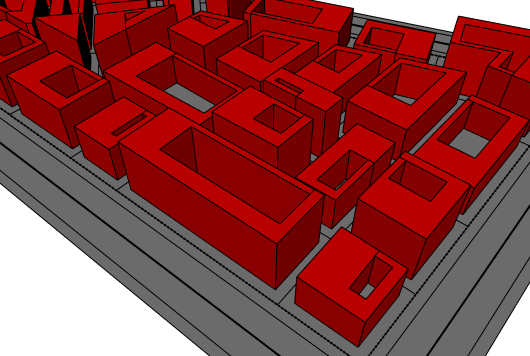

shapeL, shapeU, shapeO operations
Syntax
shapeL(frontWidth, leftWidth) { selector operator operations | selector operator operations }
shapeU(frontWidth, rightWidth, leftWidth) { selector operator operations | selector operator operations }
shapeO(frontWidth, rightWidth, backWidth, leftWidth) { selector operator operations | selector operator operations }
Parameters
- frontWidth (float)
Depth of front wing. - leftWidth (float)
Width of left wing. - rightWidth (float)
Width of right wing. - backWidth (float)
Depth of rear wing. - selector (selector)
shape The setback polygon (i.e. the L,U or O shape). remainder Selects the remainder of the polygon. - operator
The operator defines how the setback polygons are used to generate successor shapes. This also applies to shapes with more than one face.: Each polygon is put into a new shape. = All polygons corresponding to the selector are combined into one new shape. - operations
A sequence of shape operations to execute on the newly created shape.
Description
The shapeL, shapeU, shapeO operations select a number of edges, depending on predefined spatial selectors, and set them back by a user-defined distance.
These operations are another way of applying setbacks. For example
shapeL(frontWidth, leftWidth) { selector operator operations | ... }
can also be achieved with the setback operation and the comp function:
setback( comp(fe) { front=frontWidth | left=leftWidth } ) { selector operator operations | ... }
Geometry tags
The operations automatically apply semantic component tags to the resulting edge components. Refer to the setback operation for more details.Related
- comp operation
- offset operation
- setback operation
- setbackPerEdge operation
- setbackToArea operation
- comp function
Examples
L-Shapes

A block filled with L-shapes.
attr myFrontDepth = 5
attr myLeftWidth = 11
LotInner -->
Lot
Lot -->
offset(-3, inside)
shapeL(myFrontDepth,myLeftWidth) { shape : Footprint | remainder: NIL }
Footprint -->
extrude(rand(10,20)) color(1,0,0)
U-Shapes

A block filled with U-shapes.
attr myFrontDepth = 5
attr myRightWidth = 3
attr myLeftWidth = 11
LotInner -->
Lot
Lot -->
offset(-3, inside)
shapeU(myFrontDepth,myRightWidth,myLeftWidth) { shape : Footprint | remainder: NIL }
Footprint -->
extrude(rand(10,20)) color(1,0,0)
O-Shapes

A block filled with O-shapes.
attr myFrontDepth = 5
attr myRightWidth = 3
attr myBackDepth = 2
attr myLeftWidth = 11
LotInner -->
Lot
Lot -->
offset(-3, inside)
shapeO(myFrontDepth,myRightWidth,myBackDepth,myLeftWidth) { shape : Footprint | remainder: NIL }
Footprint -->
extrude(rand(10,20)) color(1,0,0)
Copyright ©2008-2024 Esri R&D Center Zurich. All rights reserved.